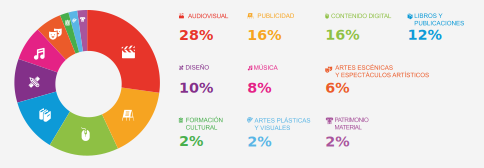
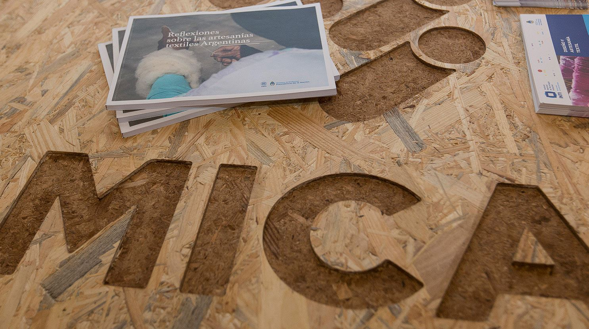

La Convención para la Protección y Promoción de la Diversidad de las Expresiones Culturales de la UNESCO es una convención que motiva la formulación de políticas culturales a nivel nacional y local, con miras hacia la optimización del ecosistema creativo, la estimulación de la creatividad y, en términos generales, la democratización en la participación a lo largo de toda la cadena de valor cultural: desde la creación hasta la producción, la distribución, la difusión y el goce de las obras, de los productos, de los bienes y de los servicios culturales.
Para dar seguimiento a su implementación, la UNESCO ha definido cuatro grandes áreas de observación:
Como se puede imaginar, las acciones que se emprendan en cualquiera de las cuatro áreas anteriormente descritas pueden ejercer una influencia positiva en el bienestar social. Poniéndolo en clave de los Objetivos de Desarrollo Sostenible, la promoción de la diversidad de las expresiones culturales contribuye con el objetivo 4 (educación inclusiva y equitativa), el objetivo 5 (igualdad de género y empoderamiento de las mujeres), el objetivo 8 (trabajo digno), el objetivo 9 (infraestructura resiliente, industrialización sostenible e innovación), el objetivo 10 (reducción de las desigualdades), el objetivo 12 (producción y consumo responsable) y el objetivo 17 (alianzas).
La creatividad es un elemento esencial no solo de la vida espiritual, sino también de la vida material y económica de las sociedades e individuos. Es reconocida como un recurso renovable e ilimitado porque podemos encontrarlo en cualquier lugar, permitiéndonos plantear nuevas oportunidades para crear el mundo que queremos, uno más equitativo e inclusivo para no dejar a nadie atrás y no dejar a nadie afuera, como se menciona en la Agenda 2030.
La creatividad estimula la innovación y tiene un impacto en los procesos de cambio transformativo, como un insumo primordial para dinamizar a la economía, las industrias y otros sectores sociales. Por eso, en la 74° sesión de la Asamblea General de Naciones Unidas se declaró el 2021 como el “Año Internacional de la Economía Creativa para el Desarrollo Sostenible (AGNU, 2019).
El origen de esta economía es la creatividad humana, en cada sector de la cadena productiva permite a bienes, servicios y actividades de contenido cultural y/o artístico y/o patrimonial, llegar al público y al mercado. Propiamente, Naciones Unidas definió a esta economía como las actividades derivadas del conocimiento, sobre las que se basan las "industrias creativas", siendo el resultado de las conexiones que se forman entre la creatividad humana, las ideas, la propiedad intelectual, el conocimiento y la tecnología. Por lo tanto, la economía creativa ofrece importante valor comercial y cultural, incluyendo las actividades relacionadas, como el comercio, la mano de obra y producción, sustentado en la libertad de expresión y los derechos culturales (UNESCO, 2021).
En las industrias creativas se encuentran representados los sectores de las artes, la cultura, la tecnología y los negocios que usan el capital intelectual como su recurso primario. Algunas actividades de las industrias creativas son: publicidad, arquitectura, artes, escultura, diseño, producción audio-visual, artes escénicas, investigación y desarrollo, innovación tecnológica, entre otros (UNCTAD, 2008).
Las industrias creativas incluyen sectores cuyo modo de operación es la reproducción industrial o semi-industrial con la posibilidad de reproducir y distribuir a gran escala sus productos, y por la otra, sectores en los que los bienes, servicios y actividades no son reproducibles de manera industrial y operan a pequeña o mediana escala (de forma artesanal).
En Argentina, la economía creativa genera el 3% del PBI del país y le da empleo a casi medio millón de personas, ocupando el 2,5% del mercado laboral. Es en la Ciudad de Buenos Aires donde está más desarrollada la industria creativa y cultural (ICC) –especialmente la audiovisual–, generando un 10% de empleo e incluso cuenta con una zona de promoción industrial y beneficios impositivos para incentivar la industria (Palermo). Le sigue la provincia de Mendoza, que impulsa el mercado multimedia y cinematográfico; Jujuy y Salta, con emprendimientos relacionados al turismo y Santa Fe, donde se destaca la industria del diseño.
Con base en lo anterior, se puede afirmar que las industrias creativas son apoyo importante para la economía y pueden lograr una recuperación sostenible e inclusiva; con beneficios a largo plazo, incluidos, entre otros, una mejora de la calidad de vida, la estimulación de la innovación y, gracias a ello, una economía más resiliente con mayor capacidad de adaptarse ante los desafíos internacionales.
En el Marco de Seguimiento de la Convención para la Protección y Promoción de la Diversidad de Expresiones Culturales, se establecieron cuatro objetivos para fomentar un ecosistema creativo que dé un impulso a las industrias culturales. Estas metas también pueden contribuir al avance en los Objetivos de Desarrollo Sostenible y la Agenda 2030.
Promover la diversidad de las expresiones culturales a lo largo de las cadenas de valor cultural: creación, producción, difusión, distribución, goce de bienes y servicios. Se contempla también la flexibilidad de las políticas por adaptaciones relacionadas en cuestiones tecnológicas y de comercio internacional.
Acceso de artistas y productores culturales a los mercados en todos los niveles. Respaldo a través de marcos institucionales; marcos jurídicos; mecanismos de cooperación; mecanismos de inversiones y de financiamiento.
Las inversiones en industrias creativas no se limitan a ser de índole financiera, sino también se conciben en la creación de las capacidades humanas e institucionales que se necesitan para establecer sistemas de gobernanza de la cultura informados, transparentes y participativos. De esta manera, las inversiones pueden comprender las dedicadas a la creación de las infraestructuras físicas indispensables para la producción y distribución de bienes culturales, o el apoyo financiero destinado a respaldar a las pequeñas y medianas empresas.
Promover el respeto de los derechos humanos y las libertades fundamentales de expresión, información y comunicación, es una condición indispensable para la creación, distribución y disfrute de las expresiones culturales diversas con una perspectiva de igualdad de género.
De esta manera, las industrias creativas, a través de la innovación, el emprendimiento y el empleo de bienes y servicios culturales demuestran que es posible aprovechar respetuosamente el patrimonio material e inmaterial para conducir hacia un desarrollo sostenible, porque motivan la participación de las personas, el respeto por la diversidad, el empoderamiento y la inclusión (sin importar la edad, sexo, etnia y estatus económico).
Productos derivados y servicios de museos, sitios arqueológicos, históricos, paisajes culturales.
Pintura, escultura, fotografía, artesanía.
Filmes y videos, radio y televisión, podcasting, mainstreaming, juegos de video y de animación.
Libros, periódicos, otros materiales impresos, bibliotecas, ferias de libros.
Artes escénicas, música, festivales, festividades y ferias.
Moda, diseño gráfico, diseño interior, paisajismo, servicios de arquitectura y de publicidad.
El sector Audiovisual es el que más volumen de producción genera desde 2017; le siguen Publicidad y Contenido digital. Estos tres sectores representaron el 59% de la producción cultural. Un segundo grupo, integrado por Editorial, Diseño, Música y Artes escénicas registra un volumen medio de producción, equivalente al 36% de la producción cultural. Y los sectores Patrimonio material, Formación cultural y Artes plásticas y visuales conforman el grupo con menor nivel de producción cultural, que representa el 5% del total.
El Mercado de Industrias Creativas Argentinas (MICA) es la plataforma más importante del país para su ecosistema cultural y creativo. Referente en la región, es un modelo de gestión pública que se replica por todo el continente en una red Latinoamericana de Economía Creativa.
El MICA es un catalizador del espíritu de época en el que la creatividad ayuda a liberar la presión producida por las tensiones históricas del campo de la cultura y a ordenar la confusión que hoy producen las viejas estructuras binarias como creador/público, emisor/receptor, etc. El espacio cultural se ha expandido, prácticas y actores que antes eran rechazados por la cultura se incorporan por medio de las industrias creativas, como las artesanías, la gastronomía o la publicidad. Las nuevas narrativas se desprenden de reglas y cánones estéticos vencidos para desplegarse en territorios transectoriales, indeterminados y mutantes que configuran un formato de experiencia participativa íntegramente atravesada por la innovación y la tecnología.
La economía creativa nos entrega experiencias únicas y heterogéneas que impactan en diversos niveles sociales. La creatividad como producto de la singularidad humana, colabora en cadenas de valor productivas, relaciones interpersonales y la producción de sentido o pensamiento sobre problemáticas contextuales. El MICA es una plataforma que invita a la construcción colectiva y a demanda de las necesidades de sus participantes, es una herramienta en constante adaptación como, en definitiva, lo es toda experiencia creativa.
La Red MICA Nacional es el registro de ferias, mercados y festivales culturales de todo el país a partir del cual se elaboró un mapeo y DIAGNÓSTICO que permite la evaluación, articulación y fortalecimiento estratégico de los mismos a través de herramientas que contribuyen al crecimiento de estos mercados y su posicionamiento en sus territorios y regiones específicas: asistencia de mercado, movilidad, capacitaciones, eventos, promoción.
En Argentina el crecimiento de los emprendimientos culturales, en paralelo al desarrollo creativo y la especialización en el campo artístico, promueve una atención complementaria a la formación de los profesionales especializados en el campo de la gestión cultural, puesto que se advierte que la experiencia y la capacidad artística ya no son suficientes a la hora de asumir la conducción de organismos, programas y proyectos culturales, tanto del ámbito público como del privado. En consecuencia se amplia una oferta formativa diversa y complementaria, que comprende propuestas orientadas a las diversas dimensiones de la actividad cultural: política, histórica, comunicacional, gerencial, económica, etc.
Los recientes cambios en los hábitos de consumo cultural y el negocio de las industrias culturales, revelan la necesidad de modelos de gestión con un nuevo tipo de profesional para el sector creativo. En Argentina, y como base de las políticas vinculadas al desarrollo de las Industrias Creativas, se cuenta con un plan de la Secretaria de Cultura de la Nación que no solo se centro el diseño e implementación de políticas, sino que también jugo un rol activo en la formación y actualización del recurso humano, poniendo una infraestructura a disposición de la industria con el fin de que los profesionales tengan acceso a las herramientas requeridas para aumentar su competitividad. El reto principal es que exista recurso humano capacitado con habilidades técnicas y empresariales que puedan fortalecer y desarrollar entre sí, de manera independiente y sostenida, las industrias creativas, en relación a los desafíos y complejidades del paisaje actual.
Con la puesta en marcha de diversas lineas de formación cultural vinculadas a las Industrias Creativas, se avanzó en fortalecer el sector creativo, a través de políticas en aspectos de financiamiento y apoyo técnico, incentivos para el consumo de bienes y servicios culturales y creativos, redes colaborativas para la creación de vínculos entre las empresas creativas y los sectores tradicionales, e incentivos al sistema educativo para generar competencias y talento humano creativo.
Es un programa que tiene como misión profesionalizar a los emprendedores de todos los sectores que conforman las industrias creativas, brindando talleres y capacitaciones técnicas en todo el país. La etapa inicial de la Fábrica de Emprendedores es una instancia de formación básica para los proyectos que recién están empezando o que encuentran un límite en el desarrollo sustentable a largo plazo. El dictado de las capacitaciones involucra a emprendedores de todas las provincias que componen las regiones NOA, NEA, Patagonia y el interior de la provincia de Buenos Aires y se realizó en Salta, Corrientes, Neuquén y Tandil, respectivamente.
“La Cultural” es un programa de la Dirección Nacional de Formación Cultural que fusiona reflexión, conferencias, talleres y formatos no tradicionales. La Cultural viene a debatir sobre los problemas de hoy y del mundo. En un marco generacional educado cultural y sentimentalmente por internet; interpelado por el florecimiento del movimiento feminista; donde corrientes migratorias expanden las cosmovisiones y las fake news e hiperconectividad son factores de sobre-estimulación constante, gestores, hacedores culturales y artistas de todo el mundo analizaron junto al público cómo afecta este contexto las formas de hacer cultura.
“La Cultural” atraviesa las diversas iniciativas de trabajo y se despliega transversalmente en los distintos diseños y dispositivos que se desarrollan a lo largo del año, tanto a nivel federal como internacional. Como parte de este programa, se implementaron las siguientes acciones:
Academia Argentina Emprende + Cultura (AAE+C) es un programa de formación inicial para emprendedores de todo el país brindado por el Ministerio de Cultura y el Ministerio de Producción de la Nación en conjunto.
Su objetivo está orientado a impulsar la formación inicial de aquellas personas que buscan emprender. A partir de un recorrido semanal de cinco encuentros de cuatro horas cada uno, se desarrollan los siguientes contenidos:
PAC: públicos, audiencias, comunidades, es un encuentro iberoamericano sobre formación de públicos y desarrollo de audiencias culturales, organizado desde la Dirección Nacional de Formación Cultural del Ministerio de Cultura de la Nación. PAC se propone reflexionar sobre el rol de los públicos, como asunto de interés público: ¿Qué herramientas resultan adecuadas para mejorar los vínculos con nuestras audiencias? ¿En qué medida contemplamos los aportes y necesidades de nuestros públicos a la hora de desarrollar propuestas culturales? ¿Pensamos nuestras iniciativas culturales como espacios para el desarrollo del tejido social y la construcción ciudadana? ¿Cómo se prepara nuestro equipo u organización para abrir y gestionar mayores espacios de participación comunitaria? Para reflexionar sobre estos y otros ejes, se sumaron destacadas personalidades y referentes nacionales e internacionales del campo cultural.
Dirigido a todos los actores del campo cultural de todo el país en general, programadores de espacios culturales públicos, productores interesados en formarse o reflexionar sobre el tema. En este sentido pensar la formación de públicos y nuevas audiencias, en el marco de los desafíos actuales de la gestión cultural, nos obliga a explorar la manera en la que los hacedores culturales dialogamos con esos diversos saberes, experiencias y perspectivas que dan cuerpo al panorama iberoamericano.
El sector cultural en Argentina está fuertemente definido por un carácter multitasking o multifunción, acorde con el tono y los modos de trabajo de una época. Los emprendimientos buscan la rentabilidad con un número reducido de recursos humanos que cumplen diversas funciones.
Lo mismo puede decirse de los trabajadores de la cultura, que logran la rentabilidad a costo de multiplicar sus perfiles laborales. Este perfil multitasking implica dos cosas, por un lado, los trabajadores de la cultura tienen la necesidad de capacitación constante (varias tareas = varios saberes), lo que promueve un pensamiento transdisciplinario. Por otro, se necesitan generar dispositivos que permitan fortalecer la fragilidad que implica trabajar en varias líneas de trabajo en simultáneo.
Asimismo, se debe considerar la percepción que tienen los gestores y creadores culturales sobre sus públicos y audiencias. Si bien comienzan los proyectos siguiendo sus deseos e intereses, entienden que el proyecto luego debe dialogar con los intereses del público. No sólo eso, la intención de desarrollar estrategias de generación y formación de audiencias no sólo para sus proyectos sino para sus sectores tiene un lugar central en sus visiones.